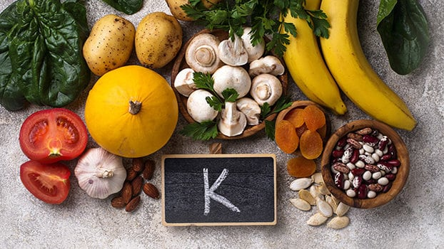

Mètodes de prevenció
Benvinguts a la pàgina de mètodes de prevenció.
Aquí, us donaré una sèria de consells i recomanacions per tal de reduir les probabilitats de patir una lesió muscular.
Bàsicament, es tracta de dos apartats generals. Un dedicat a la alimentació i l'altre a què fer abans d'estudiar o un pla d'estudi.
Pla d'estudi
Aquí us donaré una sèrie de consells molt bàsics i que podreu seguir molt fàcilment a través d'aquesta pàgina web.
Abans d'estudiar, ens haurem d'ambientar de la època de la peça. No és el mateix tocar una obra barroca que una obra clàssica.
És per això que als estils segons la època trobareu trobareu molta informació útil que us indicarà
com s'ha de tocar cada estil i us donarà indicacions de com preparar-se abans de tocar. És molt important documentar-se, ja que un no vol passar-se hores
de més tocant malament, ja que si toquem malament i després hem de tocar com s'ha de tocar passarem moltes hores tocant innecessaries que esdevindràn més possibilitat de
patir una lesió muscular.
Despés d'havent-se documentat, pensareu que hem de posar en pràctica el que hem aprés. Però us equivoqueu!!
El que s'ha de fer és estirar bé els músculs per tal de prevenir aquestes lesions. Afortunadament, aquesta web té
un espai dedicat als estiraments, on hi trobareu estiraments per estirar totes les parts que fa servir un múscic d'orquestra. A més a més algunes recomanacions de postura i exercicis.
Finalment, sí que serà la hora de tocar. Però abans recomanaría perparar-nos un horari d'estudi. Per exemple, si planejem un dia sencer d'estudi, el que recomanaría fer seríen pauses de 5 minuts cada hora per reposar els músculs. També, després de cada àpat recomanaría fer una pausa llarga per relaxar completament els músculs i després tornar a estirar.
Alimentació
L'alimentació és un aspecte fundamental per tenir uns músculs sans. Tant prevé lesions com afavoreix la seva recuperació. És molt important tenir una dieta equilibrada i evitar els aliments amb greixos saturats, brioixeria, sucres refinats els quals són dolents pels múscics. Allò que sempre ens han dit "eviteu el menjar basura" que engreixa, ho podriem substituir per "eviteu el menjar brossa per mantenir uns musculs forts".
És important mantenir una dieta rica en potassi, és a dir menjar plàtans per exemple. També cal menjar molta fruita com la síndria i mantenir dietes riques amb aminoàcids i omega-3. Aliments que porten aminoàcids o resumint proteïna, són aquells d'origen animal com la carn, llet i derivats, ou i aliments vegetals com soja, quinoa, cigrons, etc.
Bàsicament el que es recomana és tenir una dieta variada i no abusar dels aliments perjudicials que ja s'han anomenat.
